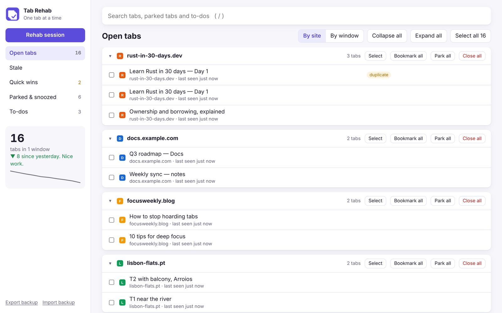
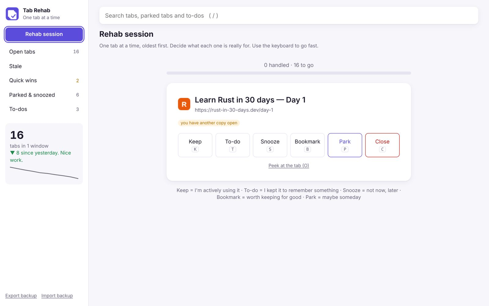
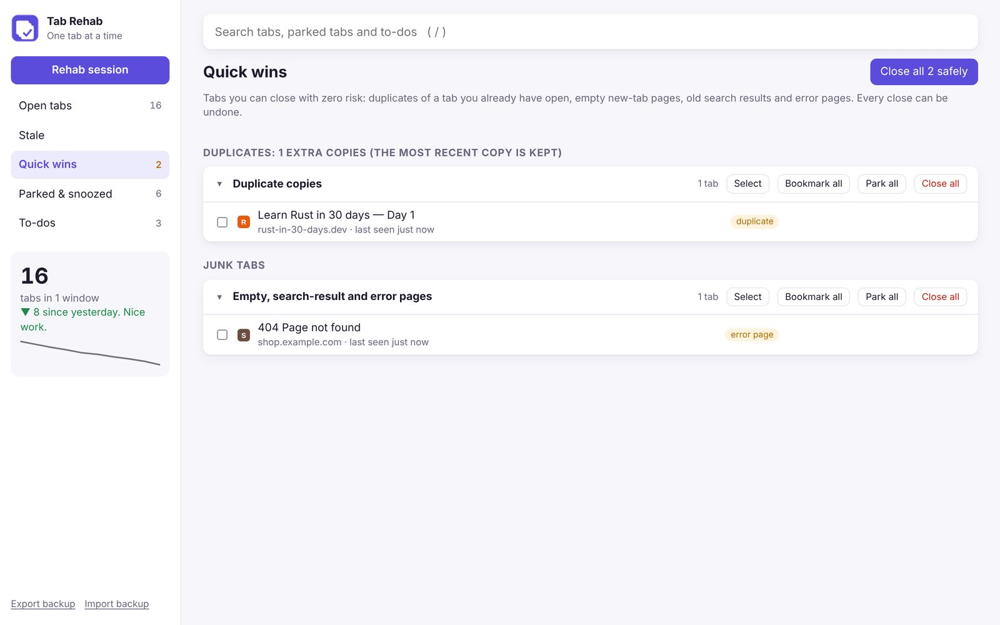
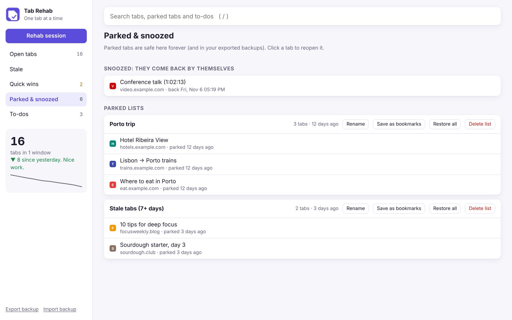
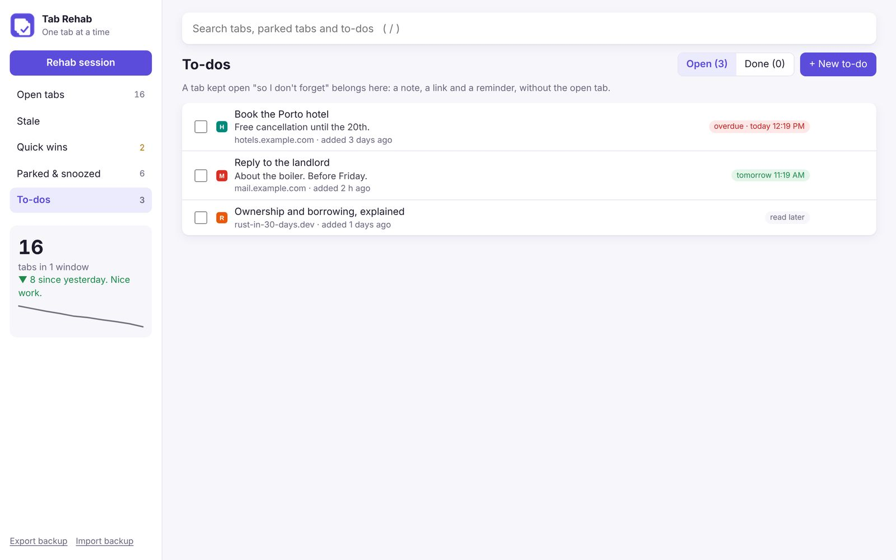

Hi. I have 347 tabs open.
Tab Rehab is a free Chrome extension for chronic tab hoarders. Close tabs without losing a thing: one tab at a time, with an undo for everything.
Clutter isn't the problem. Fear is.
Researchers at Carnegie Mellon found people keep tabs open as reminders, and because closing one feels like losing it (CHI 2021, "When the Tab Comes Due"). Tab Rehab answers the fear.
If I close it, I'll never find it again.
Undo, Recently closed and backups. Park tabs and restore them to the same window, any time.
I left it open so I wouldn't forget.
Make it a to-do. A note, a link and a reminder. The tab closes; the promise stays.
I might need it someday.
Snooze or bookmark it. It reopens by itself, or waits in a folder that syncs everywhere.
A Rehab session, minus your real tabs.
Ten tabs, oldest first. Decide what each one is for with a key: K keep, T to-do, S snooze, B bookmark, P park, C close, Z undo. Or just click.
The outlined button is Tab Rehab's suggestion. You always decide.
Six ways to let go. None of them final.
Click the icon or press Alt+Shift+T. Search everything with /, group by site or window, and right-click any page to park it or make it a to-do.





Rehab session
Your tabs one at a time, oldest first, with six one-key decisions and a progress bar.
Quick wins
Duplicates, empty tabs, old searches and error pages, closed in one click with zero risk.
Stale tabs
Tabs you haven't opened in 1 to 30 days. Park them all at once; pinned and playing tabs are never touched.
Park & restore
Save tabs to a named list and close them. Restore later, back in the window they came from.
Snooze & bookmarks
Close a tab and have it reopen tomorrow, or save it into a bookmarks folder of your choice.
To-dos with reminders
A "don't forget" tab becomes a note, a link and a Chrome notification at the time you pick.
What happens in rehab stays in rehab.
Nothing leaves your laptop. Your tabs, parked lists and to-dos live in Chrome's local storage. Export a backup any time from the sidebar.
| PERMISSION | WHY IT'S NEEDED |
|---|---|
| tabs | See, group, close and reopen your tabs. |
| storage | Keep parked lists, to-dos and settings on this laptop. |
| alarms | Wake snoozed tabs and send reminders on time. |
| notifications | Show to-do reminders and the stale-tab nudge. |
| contextMenus | The right-click "Park this tab" and "Save as a to-do". |
| bookmarks | Save tabs into the bookmarks folder you pick. |
| favicon | Show site icons in your lists. |
Two minutes. No store needed.
Tab Rehab isn't on the Chrome Web Store yet, so you load it yourself in developer mode. Works in Chrome, Edge, Brave and Arc.
- Unzip it somewhere you'll keepChrome loads it from that folder, so don't delete it.
- Open
chrome://extensionsPaste it in the address bar and switch on Developer mode, top right. - Click "Load unpacked"Choose the
tab-rehabfolder. - Pin it and startClick the puzzle icon, pin Tab Rehab, then click it or press Alt+Shift+T.
chrome://extensions. Your data stays.Coming next: relapse prevention.
What we're building next, shaped by people who actually hoard tabs.
Relapse alerts
A gentle nudge when tabs pile up past your usual. Never in quiet hours.
Recovery
Your progress, and proof it was safe to let go.
Page previews
See how a page looked before you decide its fate.
Every profile
Work and personal tabs in one view.
Auto-backup
Weekly, and before every big change.
Day 1 of recovery starts here.
Download it, load it, run your first Rehab session. Your tabs will still be there. Just fewer of them.